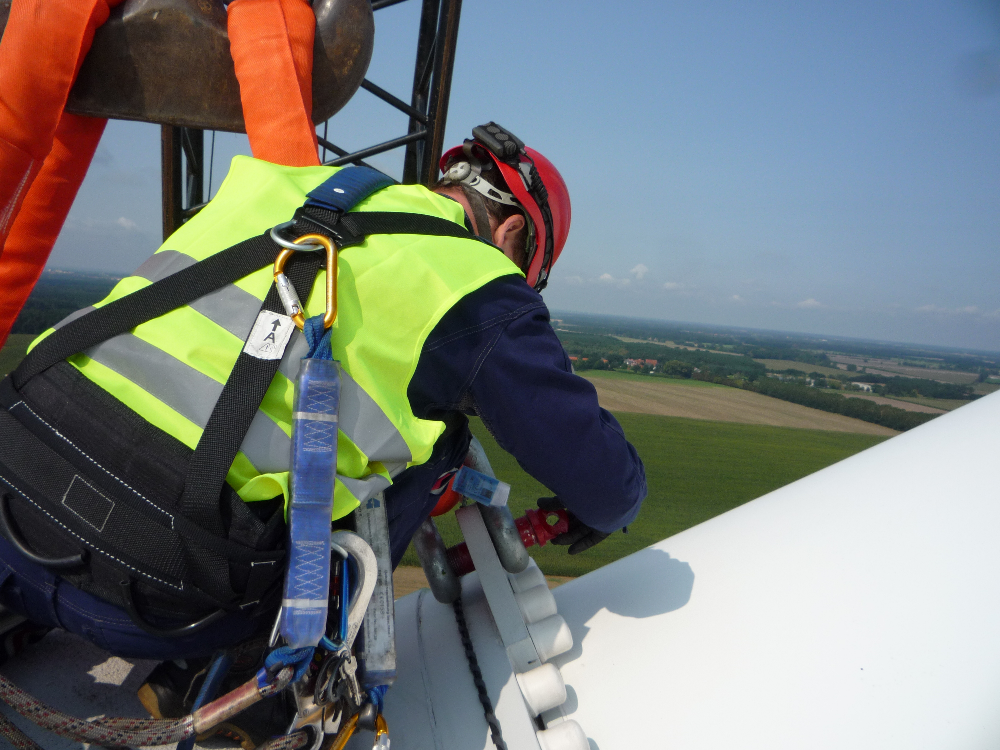
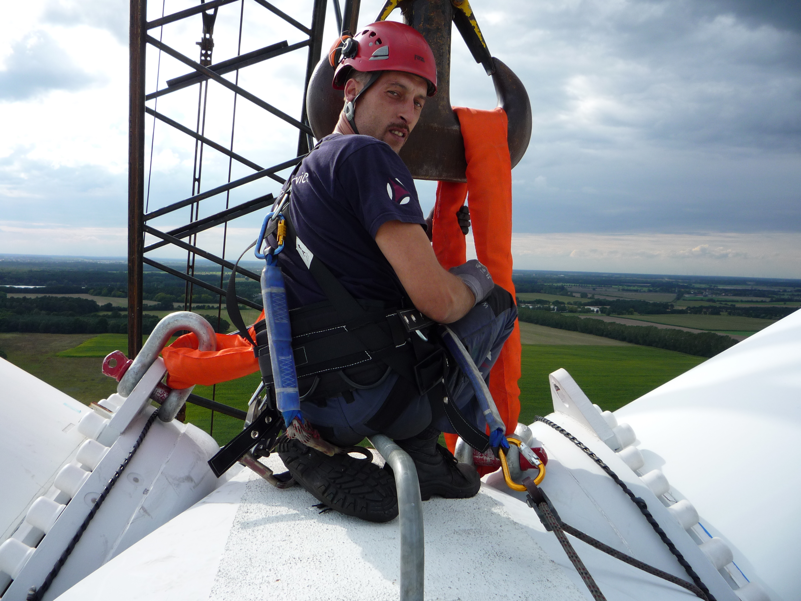
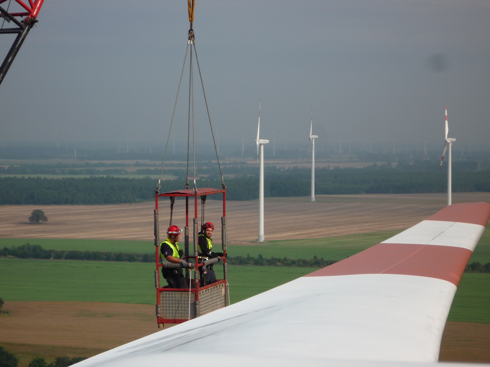

on tour on shore
Wir sind die Neuen – wir rotieren ab sofort für Sie!
Mit diesem Slogan ist die Windparkwartung Ernst Luftig GmbH vor Kurzem an den Start gegangen. Dabei sind wir alte Hasen – wenn es um die Erfahrung bei Betreuung und Instandhaltung von Windrädern geht. Neu ist unsere Zusammenarbeit in einer eigenen Firma.
Machen Sie sich auf unserer Webpräsenz ein Bild von unseren Qualitäten. Sprechen Sie uns an, wenn wir auch für Sie etwas in diesem stürmischen Markt tun können.
  Ihr Team
Ernst Luftig, Markus Benner, Józef Rataj, Erdem Öcalan, Lisa Schnell